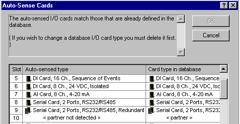
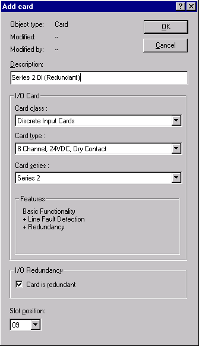

Auto-sensing and configuring Series 2 cards
Like existing I/O cards, you can add Series 2 cards to the database by auto-sensing redundant pairs already present on the control network and configuring redundant pairs offline.
Auto-sensing Series 2 I/O
The auto-sense command returns information about any redundant pairs present on the control network. If you auto-sense a Series 2 card that is connected to a redundant terminal block, the card reports itself as operating in redundant mode. If you auto-sense a Series 2 card that is installed on a simplex terminal block or not installed on a terminal block, the card reports itself as operating in simplex mode. A card's redundancy status is known even if its redundant partner is not present at the time of auto-sensing because the card detects that it is connected to a redundant terminal block. In the case of a missing redundant partner, the Auto-Sense Cards dialog indicates a redundant pair and states that a card is not installed. In this example, the Auto-Sense Cards dialog shows that the card in slot 10 is not installed.

The Auto-Sense Cards dialog presents information about installation errors in red text and informational messages in blue text. However, auto-sense cannot always detect an incorrectly installed terminal block when at least one of the cards is in the correct slot. (For example, auto-sense will not detect a problem if a terminal block is incorrectly installed in slots 3 and 4 and a card exists in slot 3 but no cards are in slots 2 and 4.) For this reason, it is recommended that you verify your installation with DeltaV Diagnostics.
Configuring Series 2 cards offline
Adding and configuring Series 2 I/O offline in the DeltaV Explorer is performed in much the same way as pre-Series 2 I/O. The Add Card dialog includes a Card class selection field (such as the Discrete Input class of cards), a Card type field (such as 24 VDC, Dry Contact), and a Card series field (Series 1 or Series 2 if Series 2 is supported by the card class and type). Click the down arrows to expand the list boxes and make your selections for card class, type, and series.

Change card series without replacing card
A useful feature of this dialog is the ability to change the card series without first deleting the card from your configuration and re-entering all the card information. As long as the original card class and type support Series 2 cards, you can change from Series 1 to Series 2 simplex or redundant; or from Series 2 simplex or redundant to Series 1. Simply click the down arrow in the Card series field and select Series 1 or Series 2 as required and then select the Card is Redundant check box if you want the Series 2 card to operate in redundant mode. Be sure that you download your changes.
The Features area shows the supported card features based on the selections for card class, type, and series. In the above example, the card selected has the basic features, plus line fault detection and redundancy. The Card is redundant check box is active when the selected card type supports redundancy and is cleared by default. Select this box to enable redundancy for this card. The Card is redundant check box controls the information displayed in the Slot position field. The Slot position field displays only valid and applicable slots depending upon the card selection and redundancy settings. The context-sensitive help provides complete descriptions for all the fields in this dialog.